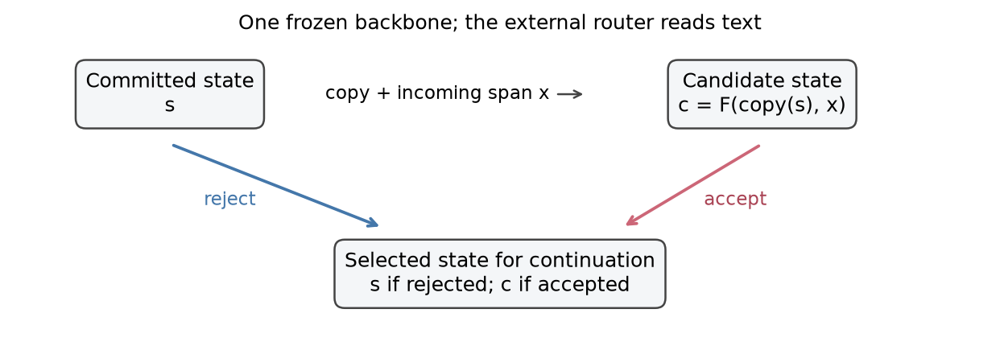
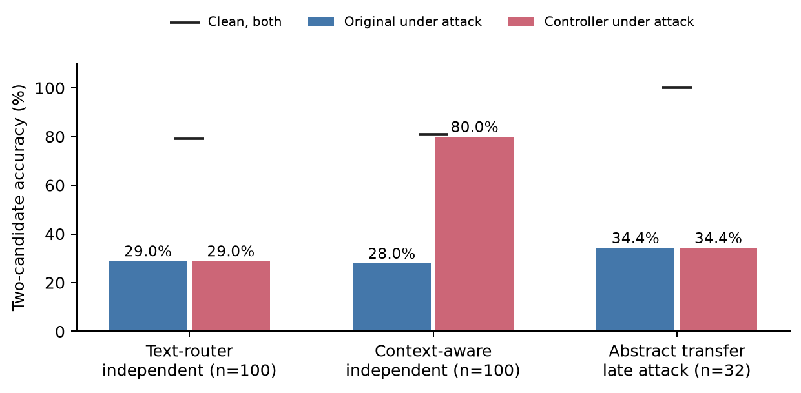

Research manuscript draft — October 2026. Author and affiliation details to be supplied before submission.
Preserving a trusted recurrent state permits discarding untrusted updates, but its security value depends on routing decisions. We study a two-bank cache controller in frozen Mamba with text routers and identical-decision filtering controls. Within a restricted synthetic fact schema, attacked two-choice accuracy rises from 28/100 to 80/100, while strict free-generation correctness rises from 20/100 to 28/100. An unfitted rule matches all 200 learned-cascade decisions, and filtering reproduces the controller outputs; neither learning nor two-bank storage has an isolated predictive contribution in that setting. A new BIPIA-derived summarization holdout compares three sequence embedding checkpoints. BGE/span reaches AUROC 0.6373 but removes payload text in only 27/600 poisoned documents and flags 5/100 clean documents. All operating points remain exploratory. A separate SST-2 prompt study selects four-shot prompting on development data and confirms 87/100 strict-correct answers on fresh examples. Reserved evaluation scores 44/50 clean in every arm. Under attack, undefended inference, learned filtering and two-bank routing each score 118/250, versus 115/250 for an unfitted filter. All 300 matched learned-filter/two-bank output pairs agree. Cache checks support implementation mechanics, while a separate repeated T4 timing protocol fails at 2,048 tokens. These results support a bounded implementation and failure analysis, without establishing useful transferable poisoning protection or a predictive advantage unique to two states.
Selective state-space language models process sequences through recurrent state updates. Mamba combines this mechanism with input-dependent selection [1]. An adversarial input can therefore affect information used later in a sequence. Hidden State Poisoning Attacks (HiSPA) motivate examining whether preserving earlier states can limit such effects [2]. State preservation, however, is only useful as a defense when a controller can determine which updates to keep.
We investigate an inference controller that shares one frozen backbone between two cache banks. The controller processes an incoming span in a candidate bank and either commits that bank or retains the earlier state. We ask three questions: Does routing preserve useful task information under malicious additions? Does a benefit transfer beyond the router's supported schema? Does maintaining two banks add predictive value beyond filtering the same rejected text?
The study gives mixed answers. A context-aware router yields a large gain on a controlled, independently generated fact benchmark. The gain vanishes on unfamiliar abstract attributes. Filtering controls reproduce controller predictions and generated text in the evaluated settings. A subsequent external-benchmark study reveals two separate obstacles: poor clean-task generation by the chosen larger backbone under the fixed prompts, and a frozen router that has no supported attribute representation for the external tasks.
A bounded follow-up tests a frozen sentence-embedding representation and added external training data with task domains held out from fitting and threshold selection. This separates a representation comparison from the earlier hard-coded schema stress test, while retaining the distinction between detector performance and end-to-end security.
Our contribution is an empirical examination of an implemented cache controller and the boundaries of its observed benefit. The post-hoc unfitted-rule comparison leaves an incremental contribution from fitting the symbolic router unestablished; the filtering controls likewise leave a two-bank predictive contribution unestablished. We provide checked cache operations, paired routing and filtering controls, retained failed-transfer experiments, and explicit distinctions between candidate ranking, free generation, attack effectiveness, and detector coverage. We do not introduce a trained dual-state backbone or establish a general HiSPA defense.
Mamba uses selective state spaces for sequence modeling [1]. Our experiments use published Mamba checkpoints with unchanged backbone weights. The smaller model has 129,135,360 parameters; the larger has 2,768,345,600. The latter is Mamba-2.8B by parameter scale, not a claim to evaluate the separate Mamba-2 architecture.
HiSPA studies adversarial strings that damage retrieval through state corruption and introduces RoBench-25 [2]. We use its published triggers and supplied abstract material in bounded adaptations. These adaptations are not complete reproductions of the official RoBench protocol. Ordinary semantic false-correction notes used elsewhere in this study are synthetic prompt injections; their harmful answer effects alone do not establish the internal mechanism studied by HiSPA.
Open-Prompt-Injection formalizes prompt injection and provides an evaluation across tasks, attacks and defenses [3]. We retain its original data selection and attack constructors for a three-task subset. Its classification parsers can detect labels anywhere in generated text, motivating a separate strict-format diagnostic. We retain the official scores for comparability.
CLASP is directly relevant prior work: it detects malicious tokens using Mamba block output embeddings and an XGBoost classifier [4]. Our router instead compares textual claims with a limited set of extracted trusted facts. We do not run CLASP here and cannot claim superiority over it. The present study assesses a simpler controller and its limitations, rather than claiming to be the first defense inspired by recurrent-state poisoning.
The follow-up uses a sentence-embedding checkpoint based on MiniLM [8, 9] and source records and attacks from BIPIA [10]. MiniLM representations encode semantic similarity but are not, by themselves, validated poisoning classifiers. BIPIA provides task-specific external contexts and published injection payloads; our bounded detection subset does not reproduce its complete attack-success evaluation.
Let F be the frozen model's deterministic state transition, s the committed cache, and x an incoming span. The controller constructs a separate candidate cache c = F(copy(s), x). A router produces a decision a from trusted reference text, x, and the task question. If a accepts the span, the controller commits c; otherwise it retains s. Subsequent tokens continue from the selected cache. Both convolution and state-space tensors are included in the copied cache.
The word “trusted” denotes a supplied reference or a controller decision, not a proof that accepted information is correct. An incorrect acceptance can commit malicious content. The reference text used by the adaptive router remains fixed; accepting a span does not make that span new reference evidence for later routing.
State access adapts the extractor supplied with HiSPA to the installed Transformers cache interface. Cached multi-token continuation in the fallback path retains the original zero-initialized scan and adds the analytically propagated initial-state contribution. For a linear state recurrence, that contribution is the initial state multiplied by the product of intervening transition factors; its output projection is added to the scan output. This is an implementation repair checked against full and tokenwise continuation, not a learned change to the backbone. The model weight checks do not imply that wrapper code is identical to unmodified library inference.
With exactly the same accepted token sequence, deterministic transitions and exact arithmetic, filtering rejected spans and selecting preserved states yield the same recurrence. This follows by induction over spans: accepted spans apply the same transition, and rejected spans leave the committed state unchanged. Floating-point kernels and chunk boundaries can still introduce numerical differences, so we measure continuation errors and output agreement. The relevant potential architectural distinction is execution cost or support for state-dependent decisions, not an automatic accuracy gain from copying caches. Our evaluated router does not make state-dependent decisions.

Figure 1. Both cache banks share frozen model weights. An external text router selects the preserved or candidate state; the evaluated router does not inspect hidden-state anomalies.
The first learned router is a hashed word/bigram logistic classifier with 8,193 parameters, trained on 1,000 generated safe/malicious records split by source group into 700 training, 200 validation and 100 held-out records. This text-only classifier showed strong initial classification performance but weak independent transfer.
The context-aware router extracts document counts, method names, CPU/GPU hardware and repetition counts. Fourteen features encode agreement, conflict, missing evidence, negation, quotations, directives and related conditions. Fast and detailed logistic heads contain 30 trained parameters in total. Detailed extraction handles scoped negation, quotations, multiple values and other-study references. It is trained using 1,000 controlled records, with 200 validation and 200 held-out records. Thresholds are fixed before independent evaluation.
Gold answers, candidate lists, attack labels and record identifiers are excluded from inference features. The router is nevertheless specialized by its vocabulary and supported attributes. That design constraint is central to interpreting transfer failures.
In the fact and abstract experiments, a trusted source is supplied separately from incoming notes. An attacker can modify incoming notes but not the supplied reference, frozen weights or router parameters. The setup assumes correct trust boundaries and does not address poisoning of the trusted source itself.
The external benchmark has a different boundary: only the task instruction is trusted, while the entire external text is untrusted. We do not provide the original clean target text as a trusted reference or expose the attack's insertion offsets to the router. This avoids giving the defense information unavailable in the stated deployment setting, but removes the factual reference on which its earlier success depended.
The follow-up compares three representations using newly fitted logistic heads: the 14 detailed symbolic features, 8,192 signed hashed word/bigram features, and a frozen all-MiniLM-L6-v2 encoder with 22,713,216 parameters [8, 9]. Each receives the same three observable fields: trusted reference/instruction, external text, and question. The symbolic head is a single classifier, distinct from the earlier two-head cascade. The lexical comparator now includes all three fields rather than only the note.
The encoder produces normalized 384-dimensional vectors for 254-token content windows with stride 192 and two special tokens. Every text token, including the tail, is covered. We concatenate mean trusted, mean question, mean note and maximum note vectors, plus absolute differences and elementwise products between the mean note and each of the other means, yielding 3,072 features. Dense features are standardized using training data only. Every head uses fixed C=1 logistic regression with balanced class weights; there is no hyperparameter sweep. Source identifiers, task answers, attack positions, clean counterparts and labels are excluded from features.
For external data, only the task instruction and user question are trusted. The full external document is the candidate note, so rejection can discard legitimate evidence. That first representation follow-up measures document-level detection; the separate October 29 study adds generic span decisions and a one-task matched-control evaluation (Sections 5.12–5.13).
The engineering revision guarded-symbolic-v1 is an unfitted policy, separate from all historical routers. It produces accept, reject, or abstain with a reason and no calibrated probability claim. Unsupported questions, absent or ambiguous trusted values, and unverifiable notes abstain. Supported question paraphrases and number words are normalized within the same limited attribute schema. Operative answer/source overrides and extracted conflicts reject; explicitly rejected quotations are distinguished from unscoped quotations. Only acceptance commits a candidate state; rejection and abstention preserve the trusted state. Empty updates leave it unchanged. This policy does not add a general entailment model or validate every clause of an accepted document.
The prospective calibration helper requires enough independent benign source groups in every represented domain, a minimum source-balanced attack recall, and a one-sided exact binomial upper bound on each domain's benign-group rejection rate. Repeated benign presentations from a source count as one group; any rejected benign presentation flags that group. The default minimum is 100 benign groups per domain, recall at least 0.5, and an upper FPR bound at most 0.05 with Bonferroni allocation of family alpha 0.05 across specified domains. No feasible useful threshold and insufficient calibration support are explicit outcomes. These software safeguards have regression tests; they have not been used to refit or replace the historical frozen operating points, and do not guarantee calibration on unseen domains.
The October 29 extension freezes three embedding-trained sequence checkpoints: MiniLM-L6, BGE-base-en-v1.5 [12] and E5-base-v2 [13]. The latter two have approximately 4.8 times as many encoder parameters. Sequence representations follow the checkpoint-specific pooling and prefix conventions; using a BERT-derived encoder does not mean using a generic masked-language-model checkpoint. Generic spans depend only on the observed document's sentence/newline boundaries and a 64-word cap. All text is covered by bounded encoder windows. Known construction offsets label training spans and grade final removals, but never enter inference features. Fitted standardization and logistic heads use training data only; calibration selects a head and exploratory threshold before final-domain feature computation.
For the one-task victim experiment, trusted content consists of the task instruction and four disjoint training demonstrations. Current-example text is entirely untrusted. Filtering and two-bank execution share frozen span masks and the same tokenized prompt. The state controller is evaluated as a mechanism for speculative recurrent-cache updates within an inference stream. These experiments do not model every persistent agent-memory store, cross-session write, retrieval policy or adaptive multi-turn adversary. Removing a text span before inference and refusing its recurrent update may be predictively equivalent; that is an explicit control, not evidence that a second state bank caused any observed accuracy gain.
Initial free-generation pilots exposed poor clean accuracy in Mamba-130M. A subsequent validation comparison selected two-candidate cloze likelihood ranking; an independent fact-change diagnostic established context use on that narrow task. The exploratory follow-up reused an earlier test set and is reported as such. Later independent benchmarks froze routers and scoring before evaluation.
Specifically, the initial published-trigger pilot had 0/20 clean and attacked answers correct, with all clean answers invalid under its True/False parser. The cloze diagnostic subsequently achieved 117/128 context-conditioned answers versus 64/128 without context across 64 fact-change pairs, with both members correct in 53 pairs. These observations motivated the restricted ranking setup; they do not repair or replace the failed free-generation outcome.
The principal synthetic adaptive benchmark contains 200 independently generated notes across 100 source groups. Safe and malicious notes remain paired within groups. A separate model-based semantic review checked the notes. The same provider generated and reviewed them; this is not independent human annotation. The abstract generalization pilot uses 32 previously unevaluated supplied abstracts, with newly constructed cloze questions and synthetic notes in five conditions. Those abstracts were not independently authenticated against publications. This evaluates a fixed router outside its supported attribute schema; it is not a test of a domain-independent representation.
The final published-trigger audit reuses 16 of those observed cloze tasks and tests seven natural-language HiSPA triggers plus the published optimized seed-35 trigger. Each trigger has a token-count-matched benign control. It uses candidate ranking, omits the full distractor protocol and tests transfer to 130M; results cannot be labeled official RoBench performance.
We prepare SST-2 sentiment, SMS Spam Collection and MRPC paraphrase tasks from Open-Prompt-Injection [3], using the underlying published datasets [5–7]. The pinned upstream selection yields 100 target and 100 injected-task records per task. Three target tasks, three injected tasks, five published attack constructors and 100 pairs yield 4,500 attack presentations. They reuse source records and templates, and are not 4,500 independent attack draws. There are 597 distinct normalized texts among the 600 baseline source records.
A separate balanced development set contains 24 examples per task and excludes normalized final-source text; selected MRPC development and final records share no sentences. This project-level separation does not establish absence from model pretraining. The model generates greedily for at most 32 new tokens under the published instructions and fixed serialization. Responses are extracted by generated token positions.
Before development outcomes, we require at least 18/24 strict correct, 22/24 valid label-at-start answers, and a 20-percentage-point gain over instruction-only accuracy in each task. These are our feasibility criteria, not official benchmark rules. Failure stops the planned security evaluation. After that failure, a separately sealed project-closing diagnostic evaluates the 600 reserved baseline examples and frozen-router coverage on all prepared inputs. This extension is post-development descriptive analysis; it does not retroactively satisfy the original gate. The 4,500 attack-conditioned generations are not performed.
Candidate ranking sums complete answer-continuation token log probabilities. Free-generation accuracy is reported separately; its strict answer-at-start parser also measures formatting. External classification reports both published substring parsing and strict parsing. Neither score is necessarily an upper bound on the other: label names in later echoed instructions can change the published parser's output even when the opening label is valid. For example, an opening Answer: negative followed by a repetition of positive or negative is scored positive by the published sentiment parser. Instruction-only and empty-context controls expose performance that does not require the external source.
Paired bootstrap intervals resample source groups or papers, preserving conditions belonging to the same unit. The adaptive headline interval uses 5,000 source-group resamples. Reported intervals are not adjusted for multiple comparisons across the study. A zero observed difference and degenerate interval do not prove population equivalence. Timing uses warm-up, CUDA synchronization, alternating variant order and fixed generated lengths; reported full-path timing includes preparation and routing.
Cache checks verify independent storage, preservation, restoration, continuation and generation handoff. Available boundary weight hashes are compared; missing terminal hashes are disclosed. Saved-response numerical audits are distinguished from fresh GPU reruns. Failed and interrupted experiments, post-interruption repairs, and reused datasets remain identified in the artifact record.
After review, a sealed evidence-sensitivity run retains all 16 observed HiSPA-pilot cases. Seven conditions produce 112 new evaluations: clean, empty source, supporting-sentence removal, cyclic substitution of another source abstract, artificial counterfactual replacement of the unique answer with its foil, clean with M35, and counterfactual with M35. Counterfactual conditions flip the expected candidate; they are artificial evidence probes, not corrected real-world publications. Complete-continuation likelihood remains primary, with per-token normalization as a secondary sensitivity check and 32-token greedy free generation scored separately. Reversing candidate order is checked on clean and counterfactual cases. This is diagnostic reuse, not an untouched test or an official HiSPA reproduction.
A separate development screen evaluates exactly one instruction-tuned checkpoint, the third-party Transformers conversion han1997/mamba-2.8b-zephyr-hf, with its original author's chat template [11]. It reuses the 72 observed examples and unchanged competence thresholds. No prompt sweep or final-domain selection follows its results. Native-to-converted checkpoint equivalence is not independently verified.
The router study has a fixed three-representation by two-training-corpus design. Both regimes use the same 1,000 synthetic training examples; the expanded regime adds 280 presentations from 40 BIPIA email records. All six heads use a common validation set of 200 synthetic and 70 email presentations. Thus synthetic-only describes fitting data, not absence of email from threshold selection. Each threshold maximizes validation recall subject to an aggregate benign false-positive rate of at most 5%, with ties favoring lower false-positive rate and then higher threshold. The constraint is aggregate, not per-domain.
Final data contain 100 table and 50 code source records, each with one clean presentation and six deterministically selected published payloads inserted at the start or end: 1,050 presentations in total. Both task domains are excluded from router fitting and threshold selection. Before constructing attacks, exact normalized source matches and five-word-shingle Jaccard similarity of at least 0.90 form connected components. No component crosses training, validation and final partitions; the final sets contain 84 table and 50 code groups. This procedure does not exclude every semantic duplicate. BIPIA's text attack family lists overlap in Language Translation, so complete attack-family novelty is not claimed. Pretrained encoder exposure to these domains is unknown.
All six heads and their thresholds are saved and hashed before final-domain featurization. Detection recall, benign false-positive rate, AUROC and calibration scores are reported per domain, with 2,000 source-group bootstrap draws for rate intervals. These are detector outcomes, not task utility or attack success. No model or threshold is revised against final outcomes.
Post-audit calculations reuse the observed records and are descriptive. We compare the trained cascade, fast-only head, detailed-extractor only-conflict rule and conservative revision on the same 200 notes. The exact audit bypasses are regression inputs, not held-out attacks. Paired source-group bootstrap uses the same 5,000 draws and fixed seed separately for ranking and strict generation. Intervals condition on this schema, provider and template collection and are not adjusted across all exploratory study comparisons.
Frozen MiniLM inference was repeated in the recorded CPU software environment without fitting heads or changing thresholds. All six heads' per-domain validation scores were reconstructed; final embedding probabilities were compared with the saved values. A new review exporter randomizes candidate positions, shuffles notes and uses opaque identifiers. Its V2 reviewer packet excludes the mapping, labels and a privately retained 256-bit random shuffle seed; opaque IDs are generated independently with system randomness. A first development export with a public date-based seed was withdrawn before review, and its artifacts are retained. The completed follow-up supplies this packet to a different local model with a pinned digest, without labels or the private mapping. It is model-based review; no human adjudication is available. All disagreements remain in the record.
A separately frozen prospective external protocol selects new exact-normalized-text-disjoint records from the pinned published sources and uses unchanged published attack constructors. It has a new 72-example competence screen, reserved clean baselines and 4,500 attack presentations. Its hash-order balanced selection and fixed trailing-newline prompt are adaptations, not the original first-N procedure or full official benchmark reproduction. The subsequent T4 execution completed the 72-example screen after a versioned token-boundary runtime repair; all three tasks failed the unchanged gate (Section 5.10). The protocol requires all tasks to pass the unchanged competence gate before any attack-conditioned generations, with no prompt sweep, checkpoint replacements or selection of favorable tasks. Same-task injection rows must be distinguished when interpreting attack objectives. These prepared inputs and runners are not efficacy results.
| Evaluation | Clean accuracy | Attacked original | Attacked controller | Interpretation |
|---|---|---|---|---|
| Reused synthetic cloze set | 96% | 76% | 94% | Exploratory reused test |
| Independent text-router benchmark | 79% | 29% | 29% | Text-router transfer failed |
| Independent adaptive benchmark | 81% | 28% | 80% | Gain within the supported schema |
| Abstract generalization, late attack | 100% | 34.4% | 34.4% | Gain did not transfer |
| Published-trigger transfer pilot, each trigger | 100% | 100% | 100% | Harmful answer effect not established |
All table entries are two-candidate likelihood accuracy. Different rows use different datasets and should not be pooled. The adaptive gain is 52 percentage points, with paired 95% interval [42, 62]. The router rejects 99/100 malicious notes and none of the 100 safe notes. Safe-note accuracy remains 83% for both variants. Removing trusted context reduces router classification accuracy to 50%; the fast-only router matches the cascade at 99.5%, leaving no additional classification benefit from escalation in this test.
Free generation gives a smaller result: attacked accuracy rises from 20% to 28%, while clean accuracy is 28%. Thus the large candidate-ranking improvement cannot be presented as a corresponding gain in unrestricted generation. On 20 cases requiring useful external evidence, the adaptive system preserves 16/20 candidate answers and 7/20 free answers, matching the original model.

Figure 2. Separate evaluation settings; all scores are two-candidate accuracy. Clean reference marks are shared by both variants. The settings differ in data and router; their percentages are not pooled.
On the 32-abstract pilot, clean candidate accuracy is 32/32 compared with 17/32 without context. Late attacks reduce both variants to 11/32. The frozen router rejects none of 64 malicious notes, and all 160 evaluated note/question combinations have unsupported attributes. This is an out-of-schema failure of this particular router. The clean competence check passed and attacks were evaluated in this experiment; it is distinct from the later external benchmark whose clean competence gate failed.
Identical-decision filtering matches controller candidate answers and generated texts in all 200 text-router cases. In abstract generalization it matches all 128 actual-routing cases and all four forced-mask probes. These controls support correct cache selection while providing no observed predictive advantage unique to the two-bank implementation. Timing likewise does not establish a general advantage: full-path throughput changes from 28.74 to 39.44 tokens/s on the adaptive synthetic benchmark, but from 16.84 to 16.28 on abstract generalization.
For each of eight fixed published triggers, both variants score 16/16, as they do under clean and matched benign conditions. Empty-context accuracy is already 12/16. There is no observed attack-induced candidate-accuracy loss to recover. A post-hoc source audit found that a literal-answer-presence heuristic solves all 16 pilot tasks and all 32 parent tasks: construction requires the answer to occur in the abstract and the foil to be absent. Neither candidate appears verbatim in the 16 pilot questions, and correct-option positions are balanced 8/8. The inspected scoring path passes no gold index to the model or router, but these checks do not exclude pretraining overlap or every implementation error. The task shortcut and high question-only accuracy weaken the ceiling result; they do not establish which shortcut the model used.
The CPU router diagnostic accepts all 256 trigger presentations on the 32 abstract tasks. Acceptance is a coverage finding, while unchanged answers reflect the limited attack-effect measurement; neither establishes general robustness or a successful HiSPA defense.
The new evidence-sensitivity run reproduces all 48 comparable historical score vectors exactly and passes 32 candidate-order checks. The following counts are for the undefended model on the same 16 cases; free generation uses the strict answer-at-start parser.
| Evidence condition | Candidate ranking correct | Strict free-generation correct |
|---|---|---|
| clean | 16/16 | 7/16 |
| empty | 12/16 | 0/16 |
| support_removed | 11/16 | 0/16 |
| unrelated | 10/16 | 0/16 |
| counterfactual | 15/16 | 6/16 |
| clean_M35 | 16/16 | 7/16 |
| counterfactual_M35 | 14/16 | 6/16 |
The model responds to altered evidence in 15/16 cases, which weighs against a fixed leaked option index as the explanation for its answers. However, substantial original-answer accuracy survives supporting-evidence removal or unrelated-source substitution. The 16/16 clean ranking result contrasts with 7/16 strict free-generation accuracy. These controls indicate both source sensitivity and strong answer priors; they do not exclude every leakage mechanism. Secondary length normalization preserves the clean, empty, support-removed and counterfactual ranking counts, but changes the unrelated and counterfactual-M35 counts. The 15/16 to 14/16 counterfactual-M35 change has no matched benign counterfactual control and is not treated as a reproduced HiSPA effect.
Mamba-2.8B passes frozen FP32 inference on a Tesla T4 at batch one. All 128 convolution/SSM cache tensors pass the implementation checks. Continuation and chunk-versus-token maximum logit errors are approximately 2.38e-5 and 2.29e-5, below the existing 1e-3 tolerance. All six forced-acceptance output comparisons match original generation; all six forced-rejection comparisons match filtering. Backbone hashes remain unchanged.
Across prefix lengths 128, 512 and 2,048, peak allocated memory reaches 13.84 GiB on a device reporting 14.56 GiB capacity. At 2,048 prefix tokens plus the trial's fixed suffix and eight generated tokens, mean full-path times over two repetitions are 11.515 s original, 11.651 s forced acceptance, 11.742 s forced rejection and 11.652 s filtering. These are descriptive reference-kernel measurements, not optimized-kernel benchmarks or evidence that training and arbitrary context lengths fit.
| Development task | Published parser correct | Strict parser correct | Strict valid |
|---|---|---|---|
| Sentiment | 12/24 | 10/24 | 13/24 |
| Spam detection | 8/24 | 0/24 | 1/24 |
| Paraphrase detection | 12/24 | 0/24 | 0/24 |
All tasks fail the predeclared gate. Strict parsing rejects otherwise interpretable formats such as Sentiment: positive; zero strict accuracy does not imply zero semantic knowledge. Yet published-parser scores are also only 50%, 33.3% and 50% on these balanced samples. Poor performance is therefore not solely a strict-format artifact.
The final CPU coverage diagnostic rejects 0/4,500 attack presentations and 0/600 legitimate baseline inputs. All 5,100 routing questions have unsupported attributes. With all spans accepted, the controller makes no rejection-based intervention on these inputs. This does not measure the attack success of the 4,500 payloads, which were not passed through the language model for an efficacy evaluation.
The post-development closing diagnostic completed all 600 reserved baseline examples. It retains the original failed competence gate and does not include attack-conditioned generations.
| Role | Task | Published parser correct | Strict parser correct | Strict valid |
|---|---|---|---|---|
| Target | sst2 | 39/100 | 12/100 | 16/100 |
| Target | sms_spam | 23/100 | 0/100 | 1/100 |
| Target | mrpc | 50/100 | 0/100 | 0/100 |
| Injected | sst2 | 53/100 | 58/100 | 71/100 |
| Injected | sms_spam | 11/100 | 0/100 | 0/100 |
| Injected | mrpc | 49/100 | 0/100 | 0/100 |
The target role measures the legitimate task on its reserved inputs. The injected role measures the attacker task on its own clean inputs, not attack success. The roles differ in source records and published instruction variants, so their difference does not isolate a causal prompt effect. Each task/role sample is balanced and selected by the published deterministic procedure. These are descriptive results for the selected records, not random population samples. Formatting and task dependence must be considered alongside accuracy.
The fixed instruction-tuned checkpoint also fails the development gate: strict correctness is 0/24, 2/24 and 0/24 for sentiment, spam and paraphrase; published-parser correctness is 12/24, 3/24 and 4/24. Many responses provide explanatory prose rather than the requested labels. These measurements concern the fixed checkpoint/prompt/parser configuration, not an intrinsic ceiling on semantic competence. The stopping rule prevents an end-to-end security-efficacy claim for this configuration; the original failed base-model result remains intact.
The table reports attack rejection and benign rejection at thresholds fixed on the common mixed validation set. Each table cell uses 600 attacks and 100 clean presentations; each code cell uses 300 attacks and 50 clean presentations.
| Training | Representation | Table: recall / FPR | Code: recall / FPR |
|---|---|---|---|
| Synthetic | symbolic | 0.0% / 0.0% | 0.0% / 0.0% |
| Synthetic | bigrams | 0.0% / 0.0% | 0.0% / 0.0% |
| Synthetic | embeddings | 55.8% / 51.0% | 12.3% / 6.0% |
| Synthetic + email | symbolic | 9.7% / 8.0% | 57.3% / 14.0% |
| Synthetic + email | bigrams | 1.0% / 1.0% | 0.3% / 0.0% |
| Synthetic + email | embeddings | 56.0% / 36.0% | 17.3% / 16.0% |
With added email training, embeddings reject 56% of table attacks while rejecting 36% of benign table inputs, compared with 55.8% and 51% under synthetic-only fitting. On code, the expanded embedding model rejects 17.3% of attacks and 16% of benign inputs. These results do not show reliable transfer of the validation operating point. The embedding model also does not consistently outperform the symbolic representation, whose expanded-data code recall is 57.3% with 14% false positives. Full per-domain scores, rate intervals and all frozen predictions are retained in the artifact report.
The validation set contains 100 synthetic and only 10 email benign examples; an aggregate 5% constraint can conceal weaker calibration on the smaller domain. This is a limitation of the fixed design, not grounds to recalibrate against the final outcomes. Whole-document rejection further risks losing legitimate task evidence. Accordingly, the detector results do not establish downstream task preservation, reduced attack success, or an advantage specific to two memory banks.
The CPU encoder processes 3,143 unique texts in 4,083 windows with 19.62 seconds of recorded encoding time. This is a batched local measurement, not per-request overhead or an end-to-end T4 speed comparison. A tokenizer API repair occurred before fitting and final featurization; original sources and the amendment are retained. Encoder outputs agree with the published SentenceTransformer path within 2.98e-8 on three short verification inputs. Four harness tests and independent audits of 6,300 saved detector decisions and 12 result cells pass.
The unfitted only-conflict rule, trained cascade and fast-only head make identical decisions on all 200 observed synthetic notes. They each reject 99/100 malicious notes and 0/100 benign notes. The rule uses the existing detailed hand-built extractor and was evaluated post hoc; it is not a schema-free detector or a new confirmatory result. Identical downstream state selection under the same decisions is a deterministic inference, not a fresh rule-baseline generation run.
| Metric on the main synthetic test | Original | Controller | Paired difference | 95% interval |
|---|---|---|---|---|
| Two-choice ranking | 28/100 | 80/100 | 52 percentage points | [42, 62] points |
| Strict free generation | 20/100 | 28/100 | 8 percentage points | [0, 17] points |
The free-generation interval includes zero, and clean strict generation is 28/100. The ranking gain cannot be substituted for a general-generation effect.
Frozen-weight analysis bounds unsupported-question risk below 0.05862 in the fast head and 0.05064 in the detailed head, both below the 0.5 threshold. Thus this historical router deterministically accepts unsupported questions under the inspected feature constraints. Spelled-out false counts, untyped numeric overrides, mixed agreement plus overrides, and supported-meaning question paraphrases produce further accepted malicious-note probes. These are CPU routing bypasses, not measured successful language-model attacks.
| Router on observed notes | Attack reject | Attack abstain | Benign accept | Benign abstain |
|---|---|---|---|---|
| Trained cascade | 99/100 | 0/100 | 100/100 | 0/100 |
| Fast-only head | 99/100 | 0/100 | 100/100 | 0/100 |
| Unfitted only-conflict | 99/100 | 0/100 | 100/100 | 0/100 |
| Conservative revision | 60/100 | 40/100 | 53/100 | 47/100 |
The conservative revision accepts none of the six audit probes or 100 observed malicious notes. However, it detects only 60 of those notes by rejection and abstains on the other 40; it also abstains on 47/100 benign notes. All 160 abstract-note presentations and all 5,100 external coverage presentations abstain. Abstention prevents those updates from being committed; it does not establish semantic attack detection, transferred competence, or preservation of task utility. No revised-controller answer generations were run.
The following counts use each original frozen threshold. Synthetic validation contains 100 benign notes; email contains only ten benign source records. Aggregate benign FPR can therefore conceal large email errors.
| Fitting corpus | Representation | Synthetic benign rejected | Email benign rejected | Aggregate benign rejected |
|---|---|---|---|---|
| Synthetic | symbolic | 0/100 | 0/10 | 0/110 |
| Synthetic | bigrams | 5/100 | 0/10 | 5/110 |
| Synthetic | embeddings | 1/100 | 4/10 | 5/110 |
| Synthetic + email | symbolic | 0/100 | 0/10 | 0/110 |
| Synthetic + email | bigrams | 0/100 | 5/10 | 5/110 |
| Synthetic + email | embeddings | 2/100 | 2/10 | 4/110 |
The expanded bigram head rejects 5/10 benign emails (50%) while meeting its aggregate constraint at 5/110. The synthetic-only and expanded embedding heads reject 4/10 (40%) and 2/10 (20%) benign emails. This is measured development miscalibration, not merely a possible limitation or a reason to recalibrate against observed final outcomes.
The repeated pinned CPU encoder reproduces all 2,100 stored final embedding probabilities exactly, with zero decision differences. Short-text encoder parity has maximum error 2.98e-8 and all four embedding harness tests pass in the recorded ML environment. These are computational repetitions on the same records and frozen heads, not additional independent samples or new fitting.
| Study | Presentations or decisions | Source units | Reuse and scope |
|---|---|---|---|
| Main synthetic test | 200 notes; 100 attacked pairs | 100 source groups | Generated within one supported schema |
| Abstract transfer | 160 note presentations | 32 abstract tasks | Constructed notes; source-group analysis |
| HiSPA interventions | 112 evaluations | 16 reused cases | Seven conditions on observed cases |
| Router transfer | 1,050 presentations; 6,300 decisions | 150 records; 134 source groups | Six models share the same inputs; payload families reused |
| Instruction-tuned screen | 72 examples | Previously observed development records | Gate failure retained |
A fresh pinned Mamba-130M CPU comparison captures unpatched full-sequence reference logits before installing the cache wrapper. At 8-, 16- and 32-token prefixes with four-token suffixes, maximum full-reference logit error is 6.9618e-05 and maximum chunk/token error is 0.00019455, below 1e-3. Cloned states have independent storage, committed states remain unchanged during candidate advancement, and before/after weight hashes match the recorded historical checkpoint. This is a small-model CPU smoke test, not a new T4 timing or large-model efficacy result.
Local input/code seals establish the checked artifact sequence, not externally authenticated preregistration. Source-group intervals do not capture all uncertainty from shared providers, domains or attack families.
The October 28 T4 run used the frozen base Mamba-2.8B checkpoint, FP32, the fixed published-task prompts and unchanged competence criteria. It completed 72 new source-example generations and three instruction-only controls. The original runtime attempt failed before scoring a source example because the tokenizer joined trusted padding with the first untrusted word. A versioned adapter repair preserves the full prompt and its input token IDs; all 5,172 prepared records pass the exact AutoTokenizer serialization check. Both attempts and the repair are retained. No prompt, checkpoint, threshold or task was selected using these outcomes.
| Task | Examples | Published parser correct | Strict correct | Strict valid | Gate |
|---|---|---|---|---|---|
| SST-2 | 24 | 14/24 | 0/24 | 0/24 | Fail |
| SMS Spam | 24 | 0/24 | 0/24 | 0/24 | Fail |
| MRPC | 24 | 12/24 | 0/24 | 0/24 | Fail |
All three strict instruction-only gains are zero. The permissive published parser can recover labels from some paragraph answers; zero strict correctness therefore does not imply zero semantic answer content. The screen differs from the earlier development study in its source selection and fixed trailing-newline prompt, so the counts are not a controlled before/after comparison. The frozen strict-format gate failed, so the protocol stopped before attack-conditioned generation; before/after backbone hashes match. The 4,500 prepared attacks therefore provide no measured security efficacy result. This establishes a competence/format limitation of the tested checkpoint/prompt configuration. It does not settle whether a competent model with another preregistered configuration could benefit from routing.
A different-model blinded review used local Llama 3.2 3B at temperature zero with a pinned model digest. It received only the randomized V2 packet, one item per request, and completed 32 source items and 160 notes in 32 requests. Relative to the retained annotations it disagreed on 47/160 note labels and 5/32 supported candidates. These are disagreements, not an adjudicated error rate. Original labels remain unchanged. The abstract notes were generated/reviewed with Claude, while Llama had been used for an earlier separate synthetic pilot; this is bounded model/provider separation. No external human adjudication or returned human spot-check is available.
The follow-up planned three warmups per mode at each prefix length, then 20 timed repetitions per mode. It completed 36 warmups and 166/240 planned measured paths before CUDA out-of-memory failure during the 2,048-token block. The 128- and 512-token blocks each completed all 20 repetitions per mode; only six measured paths completed at 2,048 tokens. The full protocol failed, and its terminal weight hash is unavailable. Four mode orders are shuffled within paired repetitions with a fixed seed. Batch size is one, precision FP32 and generation length eight tokens. CUDA synchronization brackets full-path timing, including prefix processing, candidate-state creation/copy, speculative advancement, selection and generation. Loading, garbage collection and allocator-cache clearing are excluded. The decisions are forced, so this measures cache-path cost without learned-router cost or attack efficacy.
| Prefix tokens | Original median (s) | Forced accept median (s) | Forced reject median (s) | Filtering median (s) |
|---|---|---|---|---|
| 128 | 1.110 | 1.347 | 1.335 | 1.079 |
| 512 | 2.700 | 2.937 | 2.939 | 2.635 |
| Prefix tokens | Accept/original median paired time ratio | Reject/filter median paired time ratio |
|---|---|---|
| 128 | 1.212 | 1.234 |
| 512 | 1.086 | 1.105 |
The tables are post-failure descriptive summaries of the completely observed shorter blocks. All 80 paired output-token comparisons in those blocks agree. Pre-timing cache isolation/continuation checks passed. The planned complete-run uncertainty analysis was not reached; no complete-run interval or terminal weight check is claimed. Raw rows retain peak allocated/reserved memory, and the derived summary includes p95 values. The out-of-memory error reported 13.83 GiB allocated by PyTorch on a 14.56 GiB T4. Earlier short feasibility successes therefore do not guarantee repeated two-bank execution at 2,048 tokens. These observations condition on one workload, runtime and T4.
A bounded follow-up compares MiniLM (22,713,216 encoder parameters), BGE-base and E5-base (109,482,240 each), with one document head and one generic observed-text span head per encoder. These are embedding-trained sequence checkpoints, rather than pooled generic masked-language-model checkpoints. BGE uses CLS pooling; E5 uses masked mean pooling and its documented query: prefix. The encoders differ in training and architecture as well as size, so this is not an isolated scaling experiment. Same fit data and classifier settings are used across all six cells. Compared with the earlier MiniLM study, segmentation and pooling also change; its older scores are not controlled before/after baselines.
Training uses 200 source/near-duplicate groups from BIPIA table data. Previously observed email, table and code domains are calibration/development data. The summarization domain is entirely withheld from fitting, calibration and head selection: 100 official BIPIA XSum test sources, reconstructed to match the upstream MD5, with six published payload presentations and one clean presentation per source. This is a bounded detection construction from external benchmark data, not the full BIPIA victim-model protocol. Detector ground truth records insertion of a known payload rather than independently adjudicated attack execution. Attack families can overlap across splits. Exact and near-duplicate source groups are disjoint; foundation-model pretraining overlap is unknown.
| Encoder/head | Final AUROC | Clean documents flagged | Poisoned documents flagged | Documents with payload text removed |
|---|---|---|---|---|
| minilm/document | 0.5344 | 0/100 | 0/600 | 0/600 |
| minilm/span | 0.5255 | 0/100 | 0/600 | 0/600 |
| bge/document | 0.6281 | 0/100 | 0/600 | 0/600 |
| bge/span | 0.6373 | 5/100 | 55/600 | 27/600 |
| e5/document | 0.5324 | 0/100 | 0/600 | 0/600 |
| e5/span | 0.5515 | 0/100 | 0/600 | 0/600 |
BGE/span was selected using calibration alone before final-domain features were computed. At its frozen exploratory threshold, flag recall is 55/600 (9.2%; source-cluster bootstrap 95% interval [5.3, 13.7]%). Only 27/600 poisoned documents (4.5%; interval [3.2, 6.0]%) have a payload-overlapping span removed; all 27 of these have the full constructed payload removed. The remaining flagged poisoned documents lose benign spans only. Clean-document FPR is 5/100 (5.0%; percentile interval [1.0, 10.0]%). Across the 700 presentations, exact interval-based accounting removes 4,722/1,242,988 non-payload characters and 918/39,373 payload characters. Character retention is not victim-task utility.
The paired BGE/span versus MiniLM/span AUROC difference is 0.1118, with a source-cluster bootstrap 95% interval [0.0814, 0.1460]. This supports a ranking improvement in this fixed comparison; it does not establish useful low-FPR protection or a causal benefit from parameter count alone.
All six heads fail the unchanged confidence-support requirement because email supplies only 78 independent benign groups rather than the required 100. The exploratory selector constrains calibration point FPR, not held-out confidence bounds. Additional source support alone would not establish a useful threshold: the recall and uncertainty-bound requirements would still need to pass. Five heads select a reject-nothing threshold: zero final FPR there does not demonstrate protection. Intervals condition on the fixed selected configuration, omit encoder/head selection and training uncertainty, and can degenerate for zero-count cells. Frozen-head calibration reconstruction reproduces original decision metrics, but was saved after inference and is not original raw-score logging. No BIPIA victim generations establish attack-success reduction.
A new SST-2-only protocol permits exactly three predefined prompt formats on 40 fresh development examples. It is distinct from the failed historical three-task protocol. Current-example labels are withheld; four disjoint training demonstrations are explicitly trusted. The formats score 20/40, 22/40 and 34/40 strict correct, respectively. Only the four-shot format qualifies. With that format frozen, fresh confirmation scores 87/100 strict correct and 100/100 valid, versus 74/100 using the permissive published parser. Later echoed labels explain why the parsers differ. This establishes competence for the chosen task/format; it is not a controlled gain relative to the earlier different data and prompts.
Reserved evaluation uses 50 additional target sources, five unchanged published attack constructors and one injected spam task (250 poisoned presentations). It compares undefended inference, an unfitted text-rule filter, learned BGE/span filtering, and two-bank execution using the same learned masks. Generic sentence/newline/64-word segmentation uses observed text only. No gold offset, original clean counterpart, source ID or attack identity enters routing. Full prompts are tokenized once, and filtering/two-bank arms must receive identical retained tokens and produce identical generated token IDs. The recorded tokenizer preflight covers all 350 clean/attack/injected records, with a maximum of 280 input tokens and no boundary failures. A later stricter punctuation-insensitive audit finds one short injected-source variant (Ok... versus a historical Ok); it is not a target or prompt-role overlap. The frozen lowercase/whitespace exact check and five-word Jaccard check miss this variant. Prepared inputs remain unchanged, and stronger semantic source independence is not claimed.
The reserved run ended with status complete and 1,250 recorded generations. Undefended attacks change paired strict target accuracy by -40.8 percentage points and have strict attacker-task success 0.0%. The frozen attack-validity gate passes: it requires a target-accuracy drop of at least ten points or strict attacker success of at least 10%.
| Condition | Strict target correct | Strict-format valid | Published target correct | Strict attacker success | Published attacker success |
|---|---|---|---|---|---|
| Clean / Undefended | 44/50 | 50/50 | 34/50 | — | — |
| Clean / Unfitted filter | 44/50 | 50/50 | 34/50 | — | — |
| Clean / Learned filter | 44/50 | 50/50 | 34/50 | — | — |
| Clean / Two-bank, same masks | 44/50 | 50/50 | 34/50 | — | — |
| Attack / Undefended | 118/250 | 250/250 | 138/250 | 0/250 | 0/250 |
| Attack / Unfitted filter | 115/250 | 250/250 | 138/250 | 0/250 | 0/250 |
| Attack / Learned filter | 118/250 | 250/250 | 138/250 | 0/250 | 0/250 |
| Attack / Two-bank, same masks | 118/250 | 250/250 | 138/250 | 0/250 | 0/250 |
All 250 undefended attacked outputs remain valid under the strict target-label parser, so the observed accuracy loss is not an invalid-format count. Learned filtering changes 5 input token streams and 0 target predictions, with 0 correctness changes. It supplies no measured target-accuracy gain. The unfitted filter scores 115/250, versus 118/250 undefended. Zero learned paired intervals describe the observed unchanged paired scores, not a universal no-effect guarantee.
Identical-decision filtering and two-bank outputs match in all 300 observed pairs. This supports implementation equivalence in this run, not a predictive advantage of the two-bank architecture.
| Attacked arm versus undefended | Paired target-accuracy difference | Source-cluster bootstrap 95% interval |
|---|---|---|
| Unfitted filter | -1.2 points | [-4.0, 1.6] points |
| Learned filter | 0.0 points | [0.0, 0.0] points |
| Two-bank, same masks | 0.0 points | [0.0, 0.0] points |
| Attacked condition | Post-hoc yes/no attacker success | Valid yes/no outputs |
|---|---|---|
| Undefended | 0/250 | 0/250 |
| Unfitted filter | 0/250 | 0/250 |
| Learned filter | 0/250 | 0/250 |
| Two-bank, same masks | 0/250 | 0/250 |
Colab replaced the first runtime. The execution-only continuation retains 534 observed rows and adds 716 missing planned rows, with 24 exact overlap replay generations kept separately from the sample counts. Prompts, data, masks, model, thresholds and the original validity gate are unchanged; the native, two-bank, scoring and token-serialization function bodies are checked against the original runner. The interrupted segment has no terminal weight hash. Matching continuation start/end hashes and overlap outputs do not establish that missing check.
The published injected-task instruction asks for yes/no, whereas its fixed benchmark parser expects spam/not-spam. Injected controls have 0/50 valid outputs and 0/50 correct under the strict spam parser. A compatible yes/no parser, audited post hoc, finds 20/50 valid and 13/50 correct. This secondary check does not change the frozen attack-validity gate. The injected-task control does not establish adequate spam-task competence in this prompt configuration, so low attacker-task ASR cannot establish resistance to instruction redirection. Target-accuracy damage and preservation remain separately measurable under the frozen target-drop criterion.
The backbone is the pinned FP32 Mamba-2.8B on a T4; recorded start/end fingerprints and cache-copy checks are audited where the run completes. Masks were precomputed on Apple MPS, so decoder/cache execution is not end-to-end routing latency. Fifty target-source clusters, one task, one prompt, one injected task and five constructors limit inference. No matched benign added-text/length control isolates instruction-specific damage from distraction by extra context. Paired intervals condition on the fixed configuration and cannot establish domain-wide or adaptive-attack robustness. Earlier three-task failures and the 2,048-token timing OOM remain failures under their original protocols.
The strongest positive result supports checking incoming claims against a trusted reference within a supported schema. It does not identify an accuracy advantage caused uniquely by storing two states. The controller can preserve a state mechanically while still making ineffective routing decisions. Outside its schema, this implementation generally accepts content, exposing the original model to the same input it would otherwise receive.
The embedding follow-up shows why removing explicit schema rules is not sufficient. A richer representation can reject more attacks while also rejecting legitimate inputs, and a development threshold can transfer poorly. Limited added email diversity changes results without establishing reliable domain-independent behavior. The original representation study evaluates one frozen small encoder and one fixed head family. The later three-encoder comparison adds two larger sequence checkpoints and generic spans: BGE improves ranking but removes payload text in only 27/600 poisoned presentations at its selected threshold, while E5 rejects nothing at its selected operating points. These outcomes do not rule out stronger detectors or more diverse training, and do not isolate a causal effect of encoder size.
The larger model fits the earlier short T4 feasibility workloads. The repeated follow-up reaches a memory limit at 2,048 tokens, so feasibility depends on the workload and runtime. Clean-task competence remains a separate requirement. When baseline instruction following is weak, low measured attack success can be mistaken for defense, while errors under attack can conflate task failure with adversarial damage. The external development gate makes this interpretive problem visible rather than treating all benchmark outcomes as security evidence.
The research question is not disproved for every detector, prompt or state-space model. A controller with better evidence or hidden-state features could behave differently. Our narrower conclusion is that this frozen-backbone implementation, with its evaluated text routers, does not establish a general memory-poisoning defense. The bounded follow-up retains all frozen final outcomes rather than selecting a favorable representation, domain or threshold after evaluation. In the separate SST-2 study, target-label accuracy drops from 44/50 clean to 118/250 under attack, and neither learned filtering nor two-bank routing recovers accuracy. The unfitted rule also provides no observed gain. These results close the prior lack of a competent one-task baseline without establishing useful poisoning protection.
The synthetic facts use a small schema and supplied trusted references. The attack set is not a comprehensive adaptive adversary against the defense. Independent generated notes received model-based review from the same provider, not independent human annotation. The abstract pilot uses constructed cloze questions and a supplied source snapshot. A later provenance audit matches all 120 abstract byte strings, titles and original question labels to the cited Git commit; this does not independently authenticate every underlying publication. Its construction permits a literal answer-presence shortcut. The historical model-based semantic reviewer always saw the correct candidate first and notes in a fixed order, creating annotation-review cues. The replacement exporter removes these mechanical cues; a different-model blinded review disagrees on 47/160 note labels and 5/32 candidates, without human adjudication; those cues were not supplied as labels to the evaluated Mamba scorer. Some later trigger tests deliberately reuse observed tasks, which limits independent confirmation.
The official RoBench protocol, including its full distractor setup, is not reproduced. The original external study covers three tasks and five attack constructors rather than every Open-Prompt-Injection experiment. The first BIPIA-derived detector subset covers two held-out final domains, six payloads per source and start/end positions, without official BIPIA task-utility or attack-success scoring. The separate October 29 detector study withholds a new summarization domain from fitting and selection, and still does not generate BIPIA victim-task answers. Only that new domain is unseen in project development; it is not an unseen attack-family or pretraining-independence test. Its original security gate failed; the closing baseline extension is explicitly post-development. We do not evaluate CLASP or another published defense head-to-head. Accordingly, no comparative superiority, comprehensive robustness, or state-of-the-art claim is justified.
Sample sizes are modest, attack templates and source records are reused, and candidate ranking is a restricted output setting. Strict-format metrics can conflate formatting and semantics. Timing varies by context, routing decision and kernel implementation. The historical T4 trial used two timing repetitions. The closing T4 follow-up planned 20 repetitions per path and three warmups at each length, with reference PyTorch kernels and forced decisions. It completed the 128- and 512-token blocks, then failed at 2,048 tokens after 166/240 measurements. Its terminal weight hash is unavailable. These results support no general throughput or memory-fit guarantee.
Later artifacts and the revised replay loader pin model/tokenizer revisions; earlier Mamba-130M loaders omit a revision argument. Historical fingerprints and later pinned records help detect drift but do not make those earlier loaders pinned. Artifacts retain input/code hashes, raw predictions, timing records, data provenance, notebook reproductions and observed weight-hash checks. The third-party instruction-checkpoint conversion remains unvalidated against native upstream weights. The new pinned CPU parity check does not close that conversion question or establish GPU/optimized-kernel equivalence. Earlier GPU runtime losses are recorded as unknown outcomes; recovered reruns are not counted as independent replications. The closing diagnostic retained 410 responses from an October 11 attempt, then 572 responses from an unchanged October 13 rerun before a second connection loss. A documented execution-only continuation retains those 572 responses and generates the 28 missing cases with the same inputs and generation function. The continuation reproduced exact token agreement on 12 overlap cases and every instruction-only control before proceeding. Each predetermined example counts once; replay controls are not independent samples. The interrupted segment's terminal weight hash is unavailable, so the continuation's matching start/end hashes do not establish that missing check. No training or parameter-update operation is present in the frozen evaluator. The tokenizer-boundary repair in the generalization pilot and whitespace correction before external model outcomes are documented. Source dataset terms must be checked before public redistribution; keeping local reproducibility copies does not grant redistribution rights.
Two-bank state preservation is feasible under the measured frozen-Mamba workloads, but the observed synthetic gain is explained equally well by an unfitted rule using the same hand-built extractor, and identical-decision filtering matches recorded controller outputs. Learning and two-bank state storage therefore have no isolated predictive contribution in this evidence. The conservative revision replaces silent unsupported acceptance with explicit abstention, at substantial benign-coverage cost. Embedding replay confirms the saved results and exposes measured domain calibration errors. The historical prospective three-task screen fails clean-task competence; the later one-task four-shot format passes fresh confirmation but learned routing leaves attacked accuracy unchanged at 118/250. The different-model annotation review leaves substantial disagreements. These outcomes do not establish useful transferable poisoning defense. The defensible contribution is a reproducible implementation and empirical account of its benefits, shortcuts, failures and unresolved validation requirements.
[1] Albert Gu and Tri Dao. Mamba: Linear-Time Sequence Modeling with Selective State Spaces. arXiv:2312.00752, 2023; revised 2024. https://arxiv.org/abs/2312.00752
[2] Alexandre Le Mercier, Chris Develder, and Thomas Demeester. Hidden State Poisoning Attacks against Mamba-based Language Models. arXiv:2601.01972v5, 2026. https://arxiv.org/abs/2601.01972v5
[3] Yupei Liu, Yuqi Jia, Runpeng Geng, Jinyuan Jia, and Neil Zhenqiang Gong. Formalizing and Benchmarking Prompt Injection Attacks and Defenses. 33rd USENIX Security Symposium, pp. 1831–1847, 2024. https://www.usenix.org/conference/usenixsecurity24/presentation/liu-yupei
[4] Alexandre Le Mercier, Thomas Demeester, and Chris Develder. CLASP: Defending Hybrid Large Language Models Against Hidden State Poisoning Attacks. arXiv:2603.12206v2, 2026. https://arxiv.org/abs/2603.12206v2
[5] Richard Socher, Alex Perelygin, Jean Wu, Jason Chuang, Christopher D. Manning, Andrew Ng, and Christopher Potts. Recursive Deep Models for Semantic Compositionality Over a Sentiment Treebank. EMNLP, pp. 1631–1642, 2013. https://aclanthology.org/D13-1170/
[6] Tiago A. Almeida, J. M. G. Hidalgo, and A. Yamakami. Contributions to the Study of SMS Spam Filtering: New Collection and Results. ACM Symposium on Document Engineering, 2011. Dataset record and paper link: https://archive.ics.uci.edu/dataset/228/sms+spam+collection
[7] William B. Dolan and Chris Brockett. Automatically Constructing a Corpus of Sentential Paraphrases. Third International Workshop on Paraphrasing, 2005. https://aclanthology.org/I05-5002/
[8] Wenhui Wang, Furu Wei, Li Dong, Hangbo Bao, Nan Yang, and Ming Zhou. MiniLM: Deep Self-Attention Distillation for Task-Agnostic Compression of Pre-Trained Transformers. arXiv:2002.10957v2, 2020. https://arxiv.org/abs/2002.10957v2
[9] Sentence Transformers. all-MiniLM-L6-v2 model card and checkpoint. Revision 1110a243fdf4706b3f48f1d95db1a4f5529b4d41; accessed October 16, 2026. https://huggingface.co/sentence-transformers/all-MiniLM-L6-v2
[10] Jingwei Yi, Yueqi Xie, Bin Zhu, Emre Kiciman, Guangzhong Sun, Xing Xie, and Fangzhao Wu. Benchmarking and Defending Against Indirect Prompt Injection Attacks on Large Language Models. arXiv:2312.14197v4, 2025; accepted at KDD 2025. https://arxiv.org/abs/2312.14197v4
[11] xiuyul and han1997. Mamba-2.8B-Zephyr model cards and Transformers conversion. Original revision 85b6d9a1dd2bca5787437ba63af63f155356e113; conversion revision 99a87b5e5f211c42595df370de50910f05dc7854. https://huggingface.co/xiuyul/mamba-2.8b-zephyr ; https://huggingface.co/han1997/mamba-2.8b-zephyr-hf
[12] BAAI. bge-base-en-v1.5 model card, pinned revision a5beb1e3e68b9ab74eb54cfd186867f64f240e1a. https://huggingface.co/BAAI/bge-base-en-v1.5.
[13] intfloat. e5-base-v2 model card, pinned revision f52bf8ec8c7124536f0efb74aca902b2995e5bcd. https://huggingface.co/intfloat/e5-base-v2.